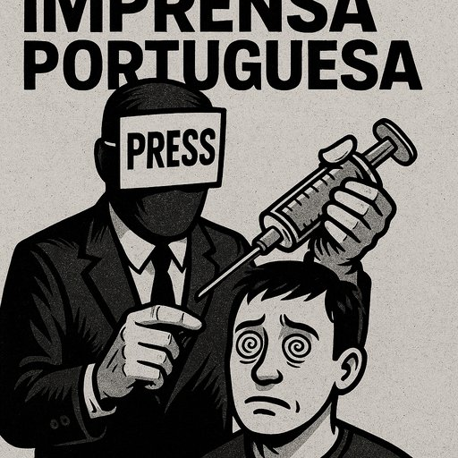

Publicado em 2025-06-17 17:01:28
Capítulo 1: O Cântico do Conformismo
A imprensa é o espelho de um país. Mas em Portugal, esse espelho está embaciado por interesses, pactos velados e um medo atávico de confrontar os poderes instituídos. O jornalismo que um dia se quis vigilante, hoje tornou-se o arauto da mediocridade. Reportagens inócuas, opiniões enviesadas, ausência de investigação real: é este o retrato da imprensa que se apresenta como "de referência".
Capítulo 2: O Jornalismo do Sistema
Publicações como o Expresso ou o Público mantêm uma fachada de respeitabilidade, mas estão submetidas ao mesmo ciclo vicioso: dependência de fundos estatais, publicidade institucional, interesses corporativos e alianças com a esfera do poder. Não se trata de censura direta, mas de autocensura rotinizada. É a seleção sistemática do que não pode ser dito.
Capítulo 3: A Normalização do Absurdo
Quando um jornalista como Rui Cardoso escreve no Expresso que "o ataque de Israel poderá levar o Irão ao caminho das armas nucleares", não está a informar. Está a distorcer. A narrativa é invertida: quem combate regimes teocráticos e terroristas é responsabilizado pela agressividade dos mesmos. Esta lógica do absurdo é vendida como análise, mas não passa de propaganda encapotada.
Capítulo 4: O Lobotomizado Coletivo
A população, alimentada diariamente com este tipo de jornalismo, deixa de distinguir o essencial do acessório. O escândalo torna-se norma, o crime um fait divers, a incompetência uma fatalidade. E o pensamento crítico? Dissolve-se no ruído mediático como uma gota no oceano.
Capítulo 5: Uma Nova Imprensa é Possível
Mas nem tudo está perdido. Projetos independentes, blogs, redes alternativas, canais livres de opinião estão a germinar na sombra da grande imprensa. É nesses espaços de resistência que nasce a esperança. Cabe-nos apoiar, divulgar e, acima de tudo, criar conteúdo que resista à uniformização da mentira.
Porque a liberdade não se herda. Conquista-se, palavra a palavra, contra o silêncio orquestrado dos vendilhões da verdade.
Artigo de Francisco Gonçalves & Augustus Veritas